Grade & origin
The quality, size or origin your market expects.
Home / Products
Products
Rice, nuts and spices for importers, wholesalers, food service and retail. Pick a product to see details and start an enquiry.
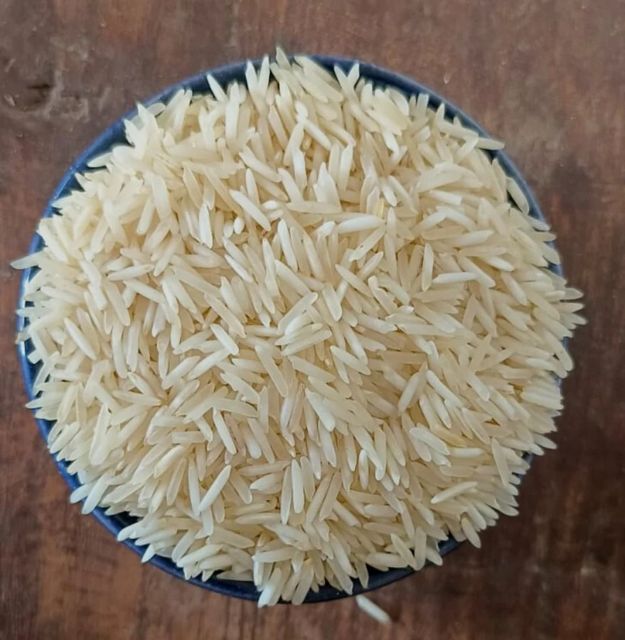
Basmati RiceBiryaniView details ↗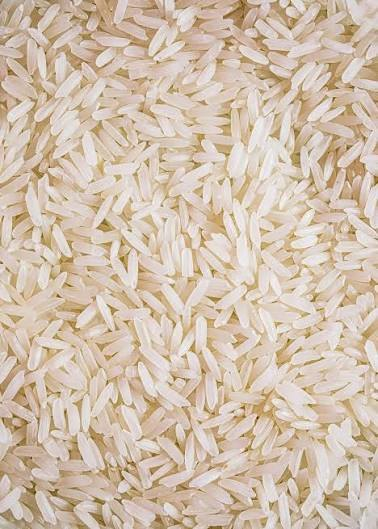
Jasmine RiceSteamed riceView details ↗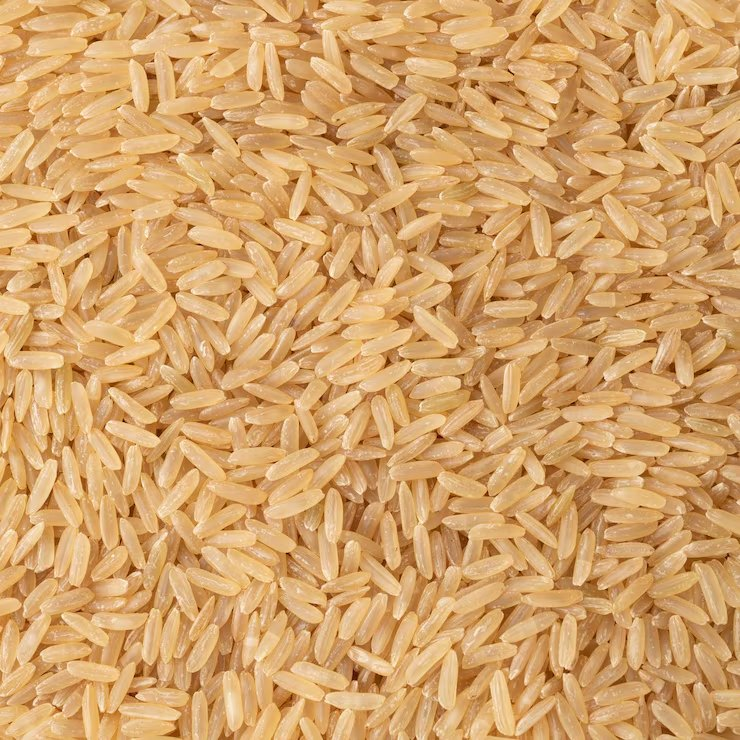
Parboiled RiceCateringView details ↗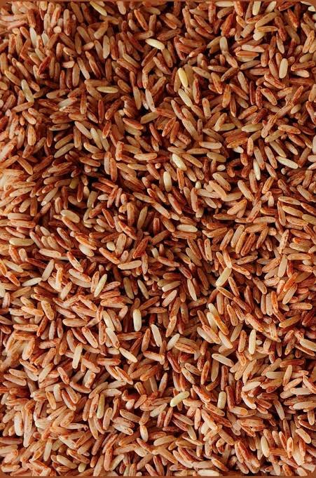
Brown RiceHealth-focused mealsView details ↗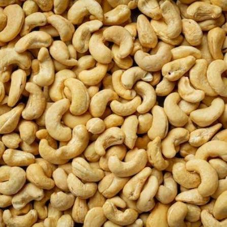
Cashew NutsSnackingView details ↗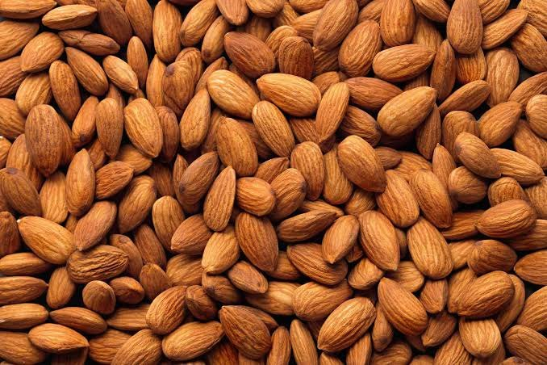
AlmondsSnacksView details ↗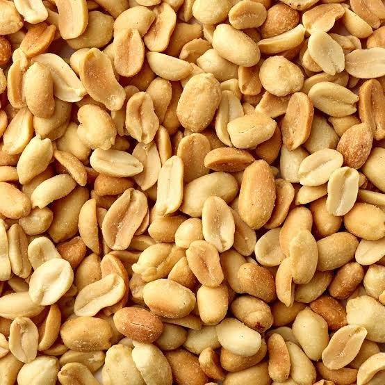
PeanutsSnacksView details ↗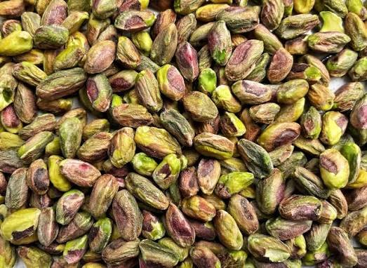
PistachiosSnackingView details ↗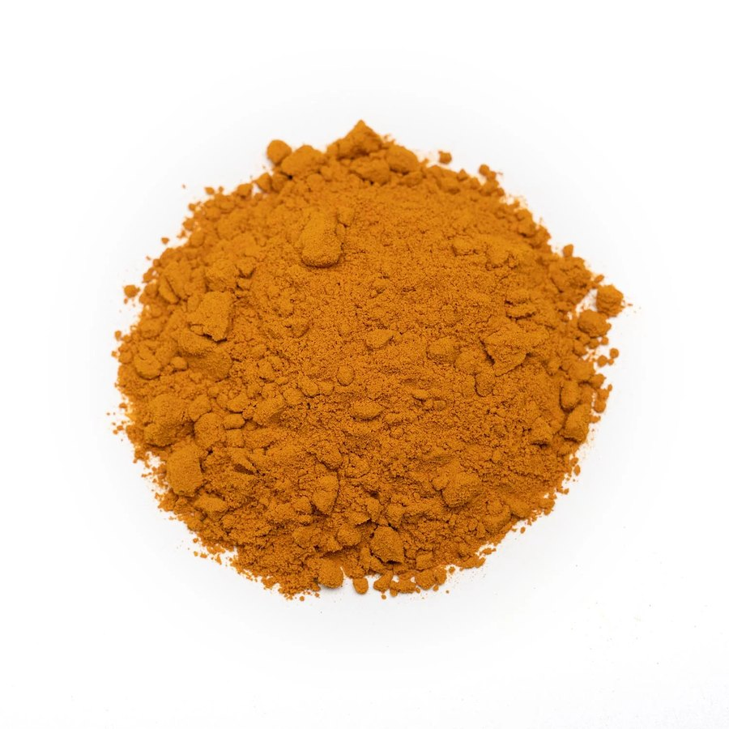
TurmericCurriesView details ↗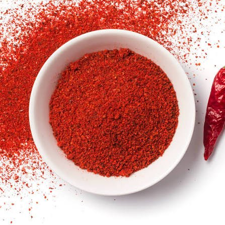
Red ChilliSambalsView details ↗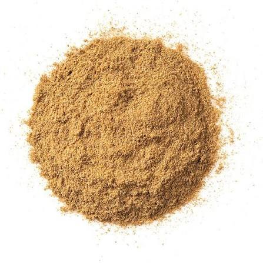
CuminTemperingView details ↗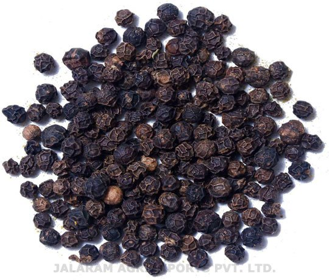
Black PepperSeasoningView details ↗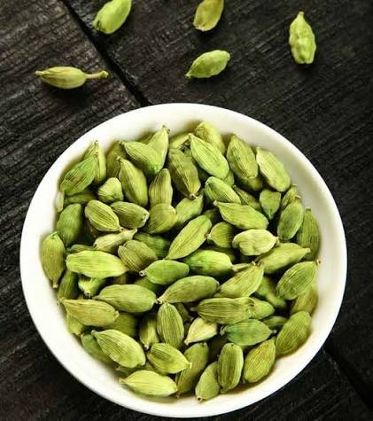
Green CardamomTeaView details ↗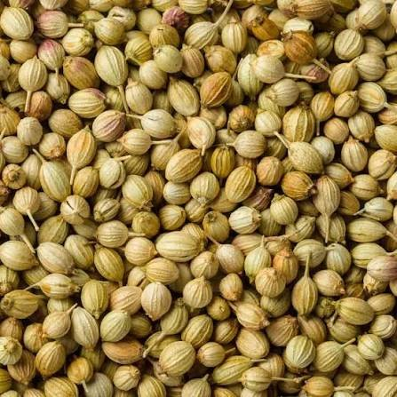
Coriander SeedCurry powdersView details ↗CinnamonBakingView details ↗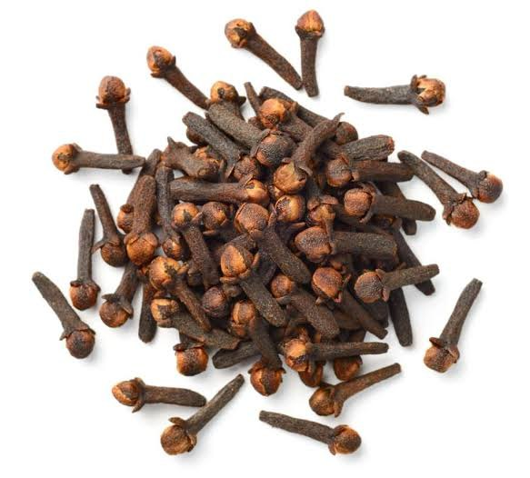
ClovesRice dishesView details ↗ Star AniseBrothsView details ↗
Star AniseBrothsView details ↗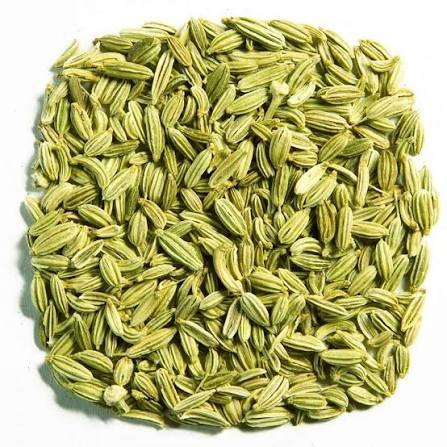
Fennel SeedSpice blendsView details ↗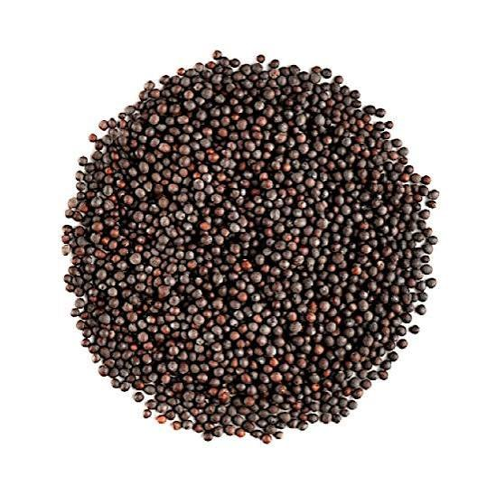
Mustard SeedTemperingView details ↗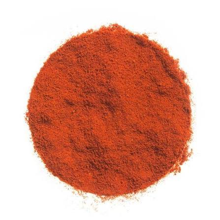
PaprikaRubsView details ↗The range shown is a guide. Availability, grades and origins change through the year, so ask us for what’s current.
Made to your spec
Every buyer is different. Share the details below and we’ll match supply to them.
The quality, size or origin your market expects.
Bulk bags, cartons or smaller packs, agreed with you.
Labels and markings that suit where the goods are sold.
One-off orders or regular supply on a schedule.
We trade other food items too. Tell us what you’re looking for and we’ll check.